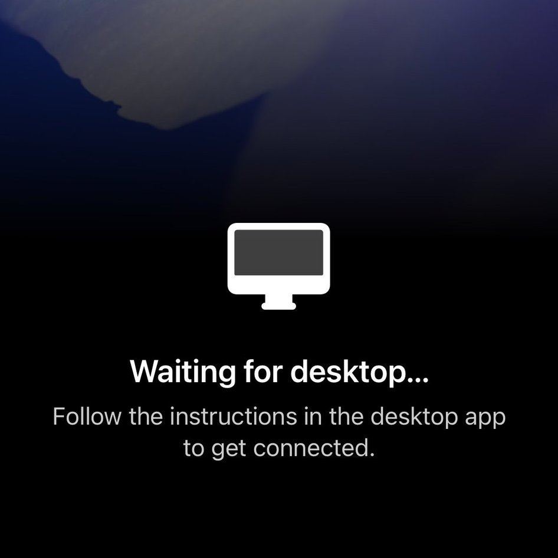

奶昔🥤
@realNyarime
在移动版 ChatGPT 支持 Codex 了
然而 Codex 将继续在你的笔记本电脑、Mac mini 或 devbox 上运行
这让我想起了一款产品，Chrome Remote Desktop…… 等于还是得有台电脑，要不干脆找个高配VPS跑？

OpenAI
@OpenAI
You've been asking for this one...
Now in preview: Codex in the ChatGPT mobile app.
Start new work, review outputs, steer execution, and approve next steps, all from the ChatGPT mobile app. Codex will keep running on your laptop, Mac mini, or devbox. https://t.co/9i2Jckjt9z